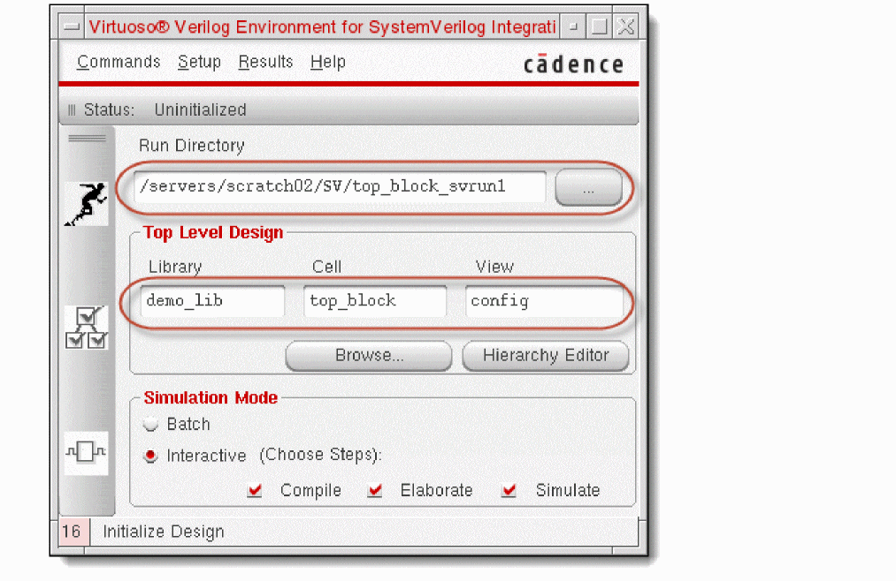
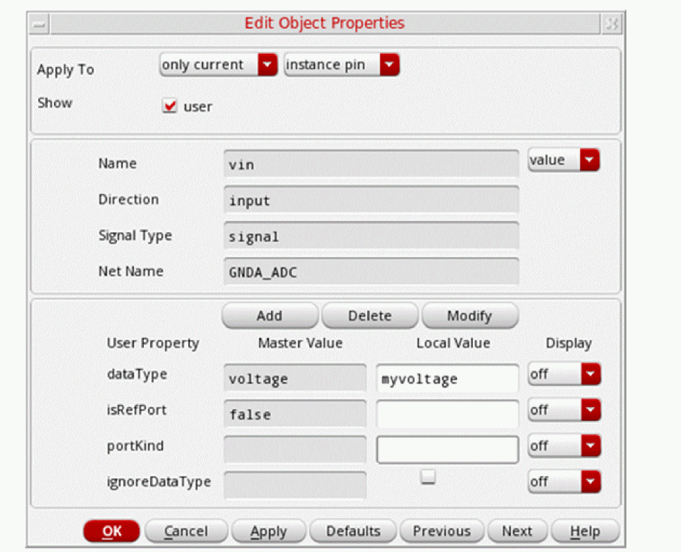
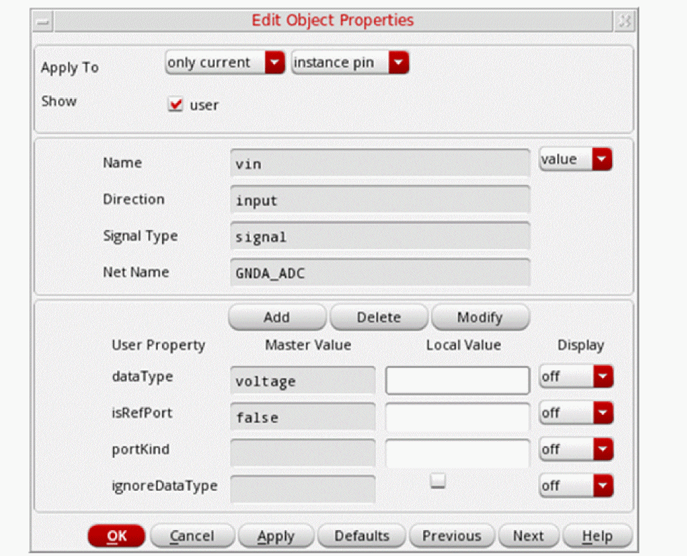
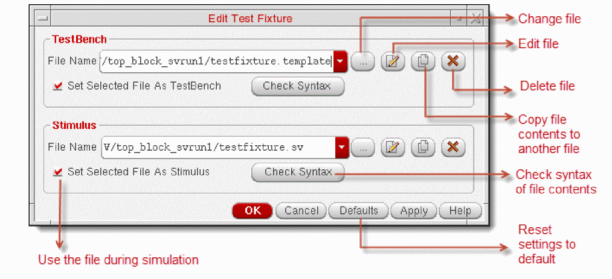
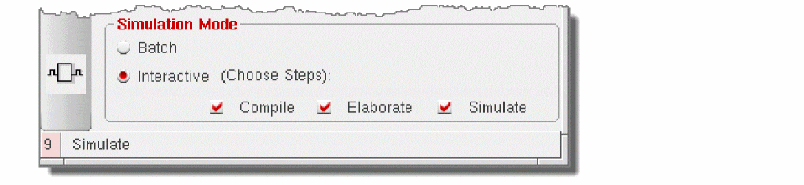
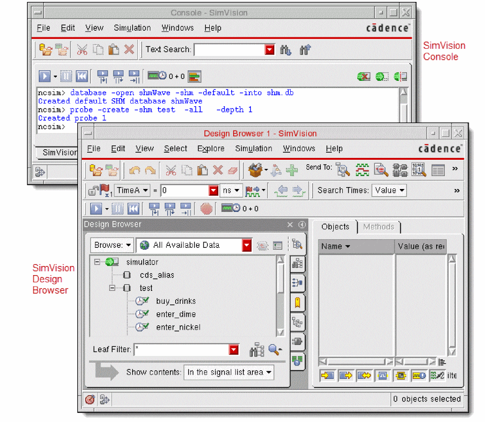
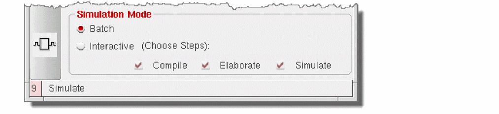
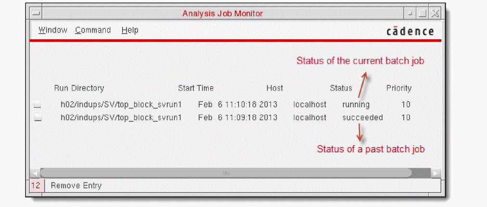

2
Generating Netlist and Simulating Designs
This chapter includes the following topics.
- Overview
- Initializing the Run Directory
- Netlisting a Design
- Simulating a Design
- Using Standalone Mode
Overview
The following figure shows how to use SystemVerilog Integration Environment for netlisting and simulating a design. For details on the functionality, features, generic flow, tool requirements, and the graphical user interface of this environment, see Chapter 1, “Introducing SystemVerilog Integration Environment.”
This chapter uses the following design example to illustrate the netlist generation and design simulation tasks.
Design ExampleThis guide uses a SystemVerilog-based drink machine design as an example to illustrate tasks performed using SystemVerilog Integration Environment. This design has the following SystemVerilog modules:
The drink machine design kit includes the This chapter assumes that you have launched the SystemVerilog Integration Environment for this drink machine design. For details, see “Launching the Graphical User Interface”. |
Initializing the Run Directory
When a simulation is run on the Cadence system, all inputs and outputs of the simulation process are contained in a single directory. This directory is referred to as the run directory.
Initializing a run directory for a design means setting the environment for netlist generation and design simulation. When you initialize the run directory, the SystemVerilog Integration Environment adds some files and a directory to the run directory. It adds the si.env file to store netlist generation and design simulation settings. It also adds .vlogifrc to store Verilog and SystemVerilog format-specific configuration.
Note the following before initializing a run directory:
-
If the run directory exists and contains the
.simrcconfiguration file, the SystemVerilog Integration Environment loads settings from this file. -
If the run directory exists and contains the
.vlogifrcconfiguration file containing Verilog and SystemVerilog format-specific configuration flags, the environment loads settings from this configuration file. -
If the specified run directory does not exist, the environment loads the $HOME
/ .vlogifrcfile. If the home directory does not contain.vlogifrc, the environment loads the default settings. - If you are using a run directory and attempt to change it, the environment prompts you for confirmation whether you want to use the previous run directory settings for the new run directory.
-
For details on
si.envand.simrc, see the Open Simulation System Reference.
To initialize the run directory for a design:
-
Ensure that the top-level design is correctly specified in the Library, Cell, and View fields of the main form.
By default, the SystemVerilog Integration Environment displays the library, cell, and view of the design opened in Virtuoso Schematic Editor, from where you launched the environment. To change the design, do one of the following:- Click Browse and select the library, cell, and view using Library Browser.
- Enter the library, cell, and view in their respective fields.
If you choose the top-level configuration view of the design, you can click Hierarchy Editor and use Virtuoso® Hierarchy Editor to browse the design hierarchy and edit design configurations. -
Specify the run directory.
By default, the SystemVerilog Integration Environment displays the directory workingDirectory/topCellName_svrun1in the Run Directory field. To change the run directory, do one of the following:
You can specify a directory relative to the current working directory. The environment automatically expands the relative directory to its full path. -
To initialize the run directory, do one of the following:
The SystemVerilog Integration Environment does the following:
Netlisting a Design
You can generate a netlist, which contains connectivity information of a design, after you have initialized a run directory for that design. Configure the netlist generation options before you generate the netlist. When you generate the netlist, the SystemVerilog Integration Environment creates a map file containing the netlist configuration options, and the map of the names used in the netlist and their corresponding names in the design. The environment lets you view the netlist and the map file.
This section provides information on the following topics.
- Configuring Options for Generating a Netlist
- Managing Data Type Conflicts
- Overriding Hierarchical Data Type Propagation
- Ignoring Port Type Propagation
- Adding Port Properties to an Instance
- Generating a Netlist
- Viewing a Netlist and a Map File
Configuring Options for Generating a Netlist
You can configure various options, based on which the SystemVerilog Integration Environment generates a netlist. The environment stores these configurations in the si.env and .vlogifrc files located in the run directory.
To configure netlist generation options after you have initialized the run directory:
- Choose Setup — Netlist. The Netlist Setup form appears.
-
Set options as required.
For example, to configure netlist generation for the sample drink machine design, you specify the path toifc.vin the Pre-Module Include File field and retain other default settings. This include file contains the definition of interfaces. The SystemVerilog Integration Environment includes this file before the module declaration in the netlist. - Click OK.
.simrc file in the run directory and store your default netlist generation and simulation configurations in this file. Configurations in .simrc overwrite configurations in si.env.hnlPrintNonAnsiSV to t in the .simrc file.The following figure illustrates the Netlist Setup form and the table describes the configuration options. For information on the configuration flag associated with the fields in this form, see “Configuring Flags for Netlist Generation”.
| Field | Description and Flag |
|---|---|
|
Select the netlisting mode from:
|
|
|
Enter the views that you want to netlist for each cell or module. You use this option with the Stop Netlisting at Views. The environment starts at the top-level cell in the design being simulated and works down the hierarchy, selecting the appropriate view for each cell netlisted. For each cell, the netlister searches for a view from the list, in left-to-right order, and netlists the first view it finds that is on the list. systemVerilog behavioral_sv functional_sv verilog_sv behavioral functional verilog schematic symbol |
|
|
Select if you want to use one of these simulation models:
Cells that do not have the
To attach the
lai_verilog or lmsi_verilog view property to an instance on a Virtuoso Schematic Editor schematic, use the Edit – Properties command available on the schematic window. For details, see the Virtuoso Schematic Editor L User Guide. |
|
|
Select if you want the SystemVerilog Integration Environment to generate sample SystemVerilog testbench and stimulus files. You can edit these files and use them for simulating the design. For details, see “Specifying the Testbench File and Stimulus File”. |
|
|
Select the following options to control netlist generation.
|
|
|
|
|
|
|
Specifies how to synchronize terminals between an instance and its switched master. You can choose from the following options:
|
|
|
Enter the list of views that controls the level of hierarchy at which netlisting stops. After netlisting a cell, the netlister checks whether the view netlisted is on this stop list. If it is in this list, the netlister stops expansion of the design for this cell. The order of views in the stop list is irrelevant. systemVerilog verilog_sv verilog symbol |
|
|
Enter the global net names you want netlisted with the supply1 wire type. Supply1 wire types are driven to logic state 1. The net names you specify must conform to global naming conventions as described in the Virtuoso Schematic Editor L. |
|
|
Enter the global net names you want netlisted with the supply0 wire type. Supply0 wire types are driven to logic state0. The net names you specify must conform to global net naming conventions. |
|
|
Select to overwrite any time values or units defined within a schematic with the following global variables: |
|
|
Enter or select the file that the netlister must use as the include file before the module declaration in the netlist file generated for each hierarchical cellview.
If hnlVerilogDumpIncludeFilesInNetlist is set to |
|
|
Enter or select the file that the netlister must use as an include file immediately after the module declaration in the netlist file generated for each hierarchical cellview.
If hnlVerilogDumpIncludeFilesInNetlist is set to |
vlogifVicSVTextCellViewList to include text files, in addition to the mandatory SystemVerilog text file. Use the following syntax in Virtuoso CIW or si.env: vlogifVicSVTextCellViewList = (list "view_type_1" "view_type_2" "view_type_n")
vlogifVicSVTextCellViewList = (list "systemVerilogText" "text.v")
In this example, systemVerilogText represents the SystemVerilog view type and text.v represents the Verilog view type.
Printing CDF Parameters in Inline Explicit Format
If an instance has CDF parameters as well as Verilog parameters, both the parameters can be read during netlisting. For the CDF parameters to be printed in the inline explicit format, the following flags need to be set to true in the .simrc file or at CIW:
hnlVerilogPrintCDFParamExplicit = t
hnlVerilogPrintOverriddenCDFParamOnly = t **Does not print the default value of parameter
hnlVerilogPrintParamExplicitNonStopping = t** Prints Verilog/CDF parameters for non stopping cells.
The hnlVerilogPrintCDFParamExplicit flag, in turn, requires the following flags to be set to true:
hnlVerilogDonotPrintDefparam = t
simVerilogPrint2001Format = t
To print CDF parameters like Verilog parameters on the instance line, define the CDF parameter hnlVerilogCDFdefparamList with the following setting:
paramType: string
parseAsCEL: yes
name: hnlVerilogCDFdefparamList
prompt: hnlVerilogCDFdefparamList
defValue: <names of all/subset of already-defined CDF parameters separated by space. These will be netlisted in inline explicit format at instance>
display: nil
When an instance with both CDF as well as Verilog parameters is encountered, the following rules are followed for netlisting:
- Verilog parameters are given precedence over CDF parameters. Additionally, the values of Verilog parameters override the values of CDF parameters.
- Verilog parameters follow the order of precedence defined in the paramOrder property.
- If the value of a CDF parameter is changed for an instance, then the parameter with the new value is netlisted.
Managing Data Type Conflicts
The SystemVerilog Integration Environment supports data type propagation from leaf-level SystemVerilog cellviews to the top-level schematic design hierarchy. During data type propagation, conflicts can occur in the following cases.
-
Conflict: An instance with a SystemVerilog data type and another instance with no data type are connected to a pin.
Resolution: The SystemVerilog data type is propagated. -
Conflict: Two instances connected to a pin have different SystemVerilog data types.
Resolution: To determine which data type must be propagated, set a custom conflict resolution mechanism. For this, define the functionhnlSVResolveDataTypeConflictas required. The return value of this function must belist(isRefPort portKind dataType isUnpacked).
For further details and an example of resolving such a conflict, see “Resolving Data Type Conflict”.
Overriding Hierarchical Data Type Propagation
In a design hierarchy, SystemVerilog Integration Environment propagates data type from the leaf-level SystemVerilog cellviews to the top-level schematic. You can override the data type propagation from a port of a leaf-level SystemVerilog cellview to the top module in the hierarchy.
To override the data type propagation from a port, change the value of the dataType property of that port in the place master of the cellview to the data type you want to propagate. In this method, you do not need to change the data type of the port in the cellview.
The following figure illustrates the override. In this figure, SV1 and SV2 are SystemVerilog cellviews, each containing a port of data type A. In the place master of SV1, the data type of the port is overridden by data type B, which is further propagated in the design hierarchy.
For further details and an example of overriding data type propagation, see “Overriding Hierarchical Data Type Propagation in a Design”.
vlogIfSVEnableDataTypeOverRiding to nil.Ignoring Port Type Propagation
If you have systemVerilog ports declared as real var <port_name> and generate a virtuoso schematic symbol, the real port will have dataType = real and portKind = var.
If you connect this port to another symbol port, which has dataType = logic and portKind = wire, you can successfully generate an NCVerilog /SystemVerilog netlist. However, if you try to use this netlist in an irun simulation, the elaboration fails due to incompatible port connection. To avoid this issue, you can ignore the data type and port information propagation by setting the vlogIfSVDisableDataPropagation flag to t in your .simrc file.
Adding Port Properties to an Instance
The Verilog Environment for SystemVerilog Integration allows you to modify the port properties dataType and portKind, which are specific to an instance. When ignoreDataType is set to t, the properties dataType and portKind are ignored. Instead, the dataType information that is propagated from the bottom-level cell to the top-level cell is considered.
You can add the ignoreDataType property on a specific instance terminal in the schematic. If this property is selected, the SystemVerilog Integration environment will not print the Master Value and the Local Value.
Additionally, you can modify the local values of the port properties dataType and portKind that are associated with a specific instance of a cell.
The following table clearly describes the impact of enabling and disabling the ignoreDataType property on the port of an instance in different scenarios:
Example
Consider the input port I2 in the following schematic and the related condition scenarios that follow.
-
When
ignoreDataTypeis set totis set on the port of an instance
When you setignoreDataTypetotonI2, the master and local values ofdataTypeandportKindare ignored. In such a case,dataTypeinformation that is propagated from the bottom-level cell to the top-level cell is used.
The following example shows how the netlist displays the port information in this scenario:
module tb_w_voltage ( output wire logic VOUT0, output wire logic VOUT1, output wire logic VOUT2, input wire logic GNDA_ADC, input voltage VIN0, input voltage VIN1 );
Here, the wire logic value is derived from the dataType property of the bottom-level cell.
-
When ignoreDataType is set to nil and the local value of
dataTypeis set to custom_value
When you setignoreDataTypetonilonI2and the local valuedataTypetomyvoltage, the local valuemyvoltageof the specific instance is used, instead of the master valuevoltagethat is set on the symbol cell.The following example shows how the netlist displays the port information in this scenario:module tb_w_voltage ( output wire logic VOUT0, output wire logic VOUT1, output wire logic VOUT2, input myvoltage GNDA_ADC, input voltage VIN0, input voltage VIN1 );
Here, the local value overrides the master value. -
When ignoreDataType is set to nil and the local value of
dataTypeis not set
When you setignoreDataTypetonilonI2and the local values ofdataTypeandportKindare not set, the master valuevoltageof the symbol cell property is used.The following example shows how the netlist displays the port information in this scenario:module tb_w_voltage ( output wire logic VOUT0, output wire logic VOUT1, output wire logic VOUT2, input voltage GNDA_ADC, input voltage VIN0, input voltage VIN1 );
Here, the property of the symbol cell (master value) is used.
Generating a Netlist
You typically generate the hierarchical netlist of a design in the following cases:
- Before simulating a new design
- After modifying a cell in your design
- After modifying a cell instantiated from a source library
Before you generate the netlist of a design, ensure that the run directory is initialized and the netlist generation options are configured as required. SystemVerilog Integration Environment generates the netlist based on how you have configured these options. It also generates a map file that includes key netlist configurations and the map of the names used in the netlist and their corresponding names in the design.
- SystemVerilog Integration Environment initializes all the OSS tabular name mapping variables to ensure that the generated netlist contains all the names in SystemVerilog namespace. It maps the OSS names for the design to SystemVerilog constructs, which is listed in the map.
- SystemVerilog Integration Environment supports the netlisting of designs with ports of type packed and unpacked arrays. For details, see “Netlisting a Design Containing Packed and Unpacked Arrays”.
SystemVerilog Integration Environment stores the netlist and map files in the runDirectory/inhl/cds0 directory. It also creates various files and folders in the run directory.
To generate a netlist and a map file of a design based on netlist configuration, do one of the following:
- Click Generate Netlist on the toolbar.
-
Choose Commands — Generate Netlist.
SystemVerilog Integration Environment does the following:
Viewing a Netlist and a Map File
After generating a netlist, you can view the hierarchical netlist containing the connectivity information of the design. You can also view the map file containing the netlist configuration options and the map of the names used in the netlist and their corresponding name in the design.
To view the netlist or the map file of a top-level design:
- Choose Results — Netlist. The View Netlist Run Files form appears.
-
Select Netlist if you want to view the netlist content.
Select Map if you want to view the map file content. - Select the library from the Library Name list.
-
Select the cell from the Cell Name list. The File Path field displays the location of the netlist or map file.
- Click View. A text window appears with the file contents.
The following figure illustrates how SystemVerilog Integration Environment displays the netlist and the map file.
Simulating a Design
Configure the design simulation options before you simulate a design for which you have generated a netlist. You can also specify the testbench and the stimulus you want to use for the simulation. You can then simulate the design in interactive or batch mode.
This section provides information on the following topics.
- Configuring Options for Simulating a Design
- Specifying the Testbench File and Stimulus File
- Simulating a Design in Interactive Mode
- Simulating a Design in Batch Mode
For information on using SystemVerilog Integration Environment in standalone mode, see “Using Standalone Mode”.
Configuring Options for Simulating a Design
You can configure various options, based on which SystemVerilog Integration Environment simulates a design. The environment lets you configure the simulation after you have initialized the run directory. It saves the Verilog and SystemVerilog format-specific settings in the .vlogifrc file. Settings in .vlogifrc overwrites the configurations in si.env and .simrc.
To configure simulation options:
- Choose Setup — Simulation. The Simulation Setup form appears.
-
Set options as required.
For example, to configure the simulation of the sample drink machine design, you configure the following fields as indicated and retain other default settings.
Field Value - Click OK.
The following figure illustrates the Simulation Setup form and the table describes the configuration options. For information on the configuration flag associated with the fields in this form, see “Configuring Flags for Simulation”.
Specifying the Testbench File and Stimulus File
SystemVerilog Integration Environment lets you use the following files to initiate the simulation of a design:
- Testbench file containing instantiation of the complete design
- Stimulus file containing the preinitialized signal settings that drive a simulation
The testbench and stimulus files are referred to as the test fixture files.
You can set SystemVerilog Integration Environment to create the following sample test fixture files in the run directory during netlist generation. For this, select Generate SystemVerilog Test Fixture Template on the Netlist Setup form. The environment stores references to the test fixture files in the .vlogifrc configuration file.
-
testfixture.template: The default testbench file -
testfixture.sv: The default stimulus fileThe test fixture files should have the valid file extensions listed in the Include Extensions field on the Simulation Setup form. You must edit and check the contents of the sample test fixture files before you use them for simulation.
For information on the configuration flag associated with the fields in this form, see “Configuring Flags for Test Fixture Files”.
To work with the sample test fixture files:
-
Choose Commands — Edit Test Fixture. The Edit Test Fixture form appears.
 -
Edit and save the sample test fixture files as required. SystemVerilog Integration Environment generates the sample test fixture files with commented statements for reference, considering that a SystemVerilog module can have different types of ports at top-level. You must edit these files appropriately. Using the sample test fixture files without proper modification can causes the simulation to fail.For the sample drink machine design, you can copy the contents of the
test_drink.vfile to the testbench file. Thetest_drink.vfile is provided with the sample drink machine design kit. Also check the stimulus file contents. - Click OK to save the test fixture setting and close the form.
If you do not want to use the test fixture files for simulation, clear the Generate SystemVerilog Test Fixture Template checkbox on the Netlist Setup form and clear the Set Selected File As TestBench/Stimulus checkboxes on the Edit Test Fixture form. In this case, when you run the simulation in interactive mode, SystemVerilog Integration Environment launches SimVision without applying any stimulus. The batch mode does not require test fixture files.
vlogifCurrentTestFixture. The flag for the stimulus file name is vlogifCurrentStimulus.Simulating a Design in Interactive Mode
Interactive mode of simulation lets you choose the compilation, elaboration, and simulation steps to perform. In this mode, SystemVerilog Integration Environment uses the NC tools and launches SimVision to let you interactively simulate the design. Using SimVision, you can directly interact with the ncsim simulator to open a database, trace signals, set breakpoints, observe signals, and perform other functions to verify your design.
simNCVerilogNostdout to nil in the Virtuoso CIW or in the simulation run control file .simrc before simulating the design. The default value of this variable is t.To simulate a design in interactive mode:
-
Click Interactive in the Simulation Mode area of SystemVerilog Integration Environment main form.
 - Choose one of the following options.
-
Do one of the following:
SystemVerilog Integration Environment performs the selected steps and informs you about the status.
If you chose the Simulate option, the environment launches SimVision. If you specified the test fixture files, the environment uses them to initiate the simulation. Otherwise, you must initiate the simulation.
The following figure illustrates SimVision, which has been launched to simulate the sample drink machine design. For details on using SimVision, see the SimVision User Guide.

Simulating a Design in Batch Mode
Batch mode of simulation compiles, elaborates, and simulates the design in that order. It uses the NC tools for performing these steps. SystemVerilog Integration Environment provides a window to monitor the status of the batch simulation job.
To simulate a design in batch mode:
-
Click Batch in the Simulation Mode area of SystemVerilog Integration Environment main form.
 - Choose Results — Job Monitor to open the window for monitoring the batch simulation job. The Analysis Job Monitor window appears.
-
Do one of the following on SystemVerilog Integration Environment main form:
SystemVerilog Integration Environment uses the NC tools to compile, elaborate, and simulate the design, without launching SimVision.
If the Analysis Job Monitor window is open, the environment displays the simulation status. This window also displays the status of the previous batch jobs. It includes an entry for each job and lets you prioritize, suspend, continue, or kill active jobs. For details on using this window, choose Help and see the Simulation Environment Help.
After completing the simulation, SystemVerilog Integration Environment displays a message, informing you about the simulation result.
Using Standalone Mode
You can run Open Simulation System-based SystemVerilog Integration Environment in standalone mode to generate a netlist of a top-level SystemVerilog-based design and simulate that design.
Cadence recommends that you initialize the run directory and configure the netlist and simulation options using the graphical user interface of SystemVerilog Integration Environment. If required, you can modify settings in the simulation environment configuration file .simrc or si.env. Note that settings in .simrc have presidence over settings in si.env.
To use standalone mode of SystemVerilog Integration Environment, ensure that the run directory includes si.env with the necessary configurations. If this file is absent, you cannot netlist and simulate a design in standalone mode.
si.env file is primarily used to instruct the simulation environment which design to simulate and which simulator to use. It is recommended not to include additional flags in this file because they can be lost after the simulation is run. Instead, use the .simrc file to customize simulation runs. Settings in this file overrides settings in si.env. For details, see How SE Works in Open Simulation System Reference.
You use the si command in the following syntax to generate a netlist and simulate a design.
si [run_directory] [-batch [-command commandName]] [-cdslib path]
-
sirepresents the Open Simulation System (OSS) binary file. -
-batchrefers to the batch simulation mode. -
-commandspecifies the command to generate a netlist or simulate a design
You typically use the following-commandoptions for your SystemVerilog-based designs: -
-cdslibspecifies the full path ofcds.lib, which defines the design libraries and the path to these libraries.
For more information on the si command line interface, see the Open Simulation System Reference.
The following examples illustrate how you use SystemVerilog Integration Environment in standalone mode.
-
Run
sifrom the run directory to netlist the design referred insi.env. Thecds.libfile is located in the home directory.
si -batch -command netlist -cdslib ~/cds.lib -
Run
sifrom the run directory to simulate a SystemVerilog-based design referred in thesi.envfile.
si -batch -command vlogifNCSVSetupBatch
Return to top